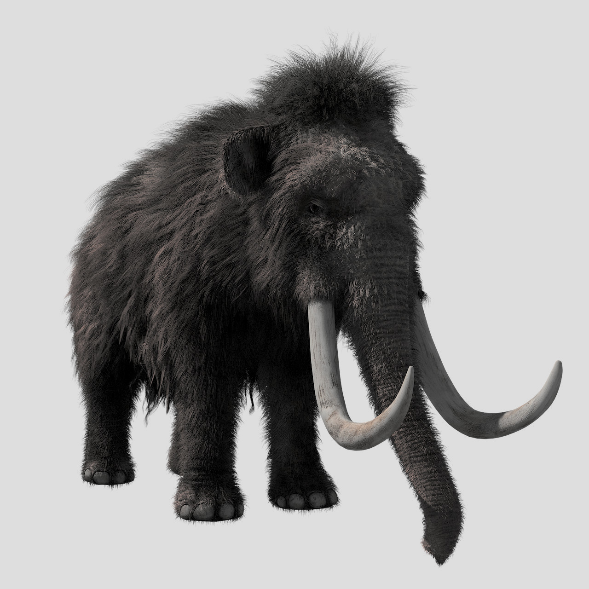

![]()
Hello there fellow data science person. Have you heard rumours that a lot of folks from our community are moving to use mastodon for social networking? Are you curious, but maybe not quite sure about how to get started? Have you been thinking “twitter is a hellsite and I need to escape” a lot lately?
If yes, this post is for you!
It’s written from the time-tested pedagogical perspective of “the writer who is only one chapter ahead of her audience in the textbook”. I’ve been on mastodon for a few days, but this isn’t my first rodeo over there: I signed up for it very early on several years ago, and tried again a few years after that. This time I’m a lot more enthusiastic about it than the last two, so I’m writing a quick introductory post to help my fellow data science folks test out the waters. I sort of know what I’m doing there but not completely!
If you want a more detailed guide on navigating Mastodon and the fediverse, I recommend fedi.tips. There’s a lot of answers to common questions over there, from someone who actually does know what they are doing! Alternatively you can read this thread which covers a lot of the same things I’m saying here!
Okay, let’s dive in…
A mastodon, I suppose. Image freely available via Pixabay

What is Mastodon? What is the fediverse?
If you’re entirely new to this, your mental model of mastodon is probably something like “mastodon is an open source twitter clone”. To a first approximation that’s right, but if you want to really feel at home there you’re going to want to refine that mental model in a few ways. Mastodon is very similar to twitter in design, but there are some important differences
First off, mastodon is not a single application: it’s a distributed network of servers that all talk to each other using a shared protocol.1 If two servers talk to each other they are said to be “federated” with one another, and the network as a whole is referred to as the “fediverse”.
There are many different servers out there that are independently running mastodon: these are called mastodon instances. You can sign up for an account at one or more of these servers. The most popular instance is mastodon.social, but for reasons I’ll talk about in a moment this might not be the best choice for you! For example, my primary account is on fosstodon.org and my art-only account is on an instance for generative artists, genart.social.
Fortunately, it usually doesn’t matter too much which instance you pick: the servers all communicate with each other so you can follow people on different servers, talk with them, etc, and it’s entirely possible to migrate your account from one server to another (I’ll talk about that later in the post). It’s only when you get into the details that it starts to matter!
Terminology: Toots and boosts
Posts on twitter are called “tweets” and have a 280 character limit. Posts on mastodon are called “toots” and have a 500 character limit. If you’re thinking of making a joke about “haha it’s called tooting” well fine, but there’s a pretty good chance that everyone has already heard it. Very few of us are actually that original :-)
Sharing someone else’s post on twitter is called a “retweet”. The mastodon equivalent is called “boosting”. One deliberate design choice on mastodon is that there is no analog of “quote retweeting”: you can either boost someone else’s toot and you can post your own. You can’t share someone else’s post to your own followers with your commentary added. This is a deliberate design choice to prevent people from “dunking” on each other.
Is there a data science community there?
Yes! There’s definitely a data science community there. It’s much smaller than the one on twitter and things tend to move at a slightly slower pace, but there are some advantages.
You can find your data science friends by searching for hashtags. R folks will quickly find other R users posting with the #rstats hashtag, but you can also find #TidyTuesday and other familiar hashtags. I’ll talk about this more later, but hashtags are much more useful (and more important) on mastodon than they are on twitter. The interface for hashtags is basically the same as twitter: you can search for them in the search box (see interface section below), hashtags are clickable links, etc.
Once you’ve found some people, you can find more by taking a look at who they follow and who follows them. Again, the interface for that is essentially the same as twitter: click on someone’s profile, and you’ll be able to find a list of people they follow and the people who follow them. However, what you will often finds is that these lists are incomplete: generally, the follower counts are accurate, but servers only publish the list of account names for accounts on that server.2
Finally, when you’re ready to get started you can make an introduction post: all you have to do is send out a post tagged with #introduction. With any luck that will be picked up and shared with others!
Which server should I sign up on?
There’s a nicely server list at fediscience.org that has some commentaries. Here’s a few possibilities you might consider:
mastodon.social: The largest instance. It’s general interest, so you get a reasonably diverse audience. However it’s also the focal point so any time there’s a wave of migrations from twitter it will probably be the first one to show performance hits.
fosstodon.org: An instance with a focus on open source software. There are a lot of tech people on this one, which means you can watch the local timeline scroll by (more on that coming!) and see lots of random techy posts.
fediscience.org: A science focused instance, including natural and social sciences.
vis.social: Lots of cool data visualisation folks here.
tech.lgbt: An instance for folks who work in tech, science, academia, etc who are LGBTIQ or allies.
For any server, you should look carefully at the server rules that will be posted on the “About” page. Each server has different policies that will affect moderation. Don’t sign up for vis.social if you want to post about NFTs (I’ll talk about NFTs later actually), and don’t join fosstodon.org if you want to post in languages other than English. Don’t join any of these servers if you want to post anti-trans content.3
Take a little time to look around but don’t worry about the choice too much. You can move your account across servers without too much difficulty if you need to, and I’ll show you how later in the post.
Can you tell me about the web interface?
Okay so you’ve decided on a server, signed up for an account, and are ready to get started. Let’s take a look at the interface!
For the purposes of this post I’ll assume you’re looking to get started by using the web interface. There are, unsurprisingly, apps you can download onto your phone (e.g., I’m using the standard mastodon app on iOS), but I’m trying not to complicate things in this post so let’s assume you’re using your laptop and are browsing through the web interface!
My main account is djnavarro@fosstodon.org. In my browser I’m logged in already, so when I navigate to fosstodon.org I’m automatically shown the logged in view. There are two versions you can choose between, the “standard view” and the “advanced view”.
The “standard view” interface looks pretty similar to what you’d expect from twitter. On the left you can write posts, in the middle there’s a column where your feed is shown (I’ve edited these screenshots to remove the actual posts, just so we can focus on interface), and on the right sidebar there’s a menu with various options you can click on:

In a lot of cases this view will work well for you, but if you want to track hashtags – more on that later because hashtags are important! – you might find it useful to switch to the “advanced view”. To switch, click on the “Preferences” option on the right hand side, which brings up a preferences screen that looks like this:
Click on the “Enable advanced web interface” option, like I’ve done here, and click save changes. When you then go back to mastodon, the interface will have changed to one that looks very similar to the Tweetdeck interface that a lot of folks on Twitter use:
There are more columns. As before, the left column shows an area where you can compose posts, and on the right column a menu with options is shown. Posts will appear in the “Home” column. Mentions, favourites (similar to Twitter “likes”), and boosts (similar to Twitter retweets), will be shown in the “Notifications” column.
How do I make a post?
Writing a post on mastodon is similar to how you would write a post on twitter. The compose window looks like this:
You type the text you want into the box, adding hashtags, and then click the “Toot!” button (it may look different on your instance – I’ve seen the same button labelled “Post” sometimes). As you type, you’ll see the character count in the bottom right corner change to let you know how many characters you have left: you’re allowed 500 characters for a post on mastodon.
The nuances are important though. Those other buttons on the bottom left… those are all useful features. From left to right:
The paperclip button: clicking this will let you attach an image. When you do, there will be an option to edit the image and (especially important!) to add alt text for accessibility purposes. Mastodon has a stronger norm about alt text than twitter: always add alt text. I have a section on alt text later in this post.
The barchart button: this will let you add a poll. Polls on mastodon work similarly to twitter, but are a bit more flexible. You can add more options and let users select multiple options.
The world button: this will let you set the visibility for the post. If you click on it you will see four options: “public” means everyone can view it, “unlisted” means everyone can view it but it doesn’t get indexed by discovery features (very handy in replies and threads where you don’t want everyone to be automatically shown your comment), “followers only” means only your followers can see it, and “mentioned people only” means only the people mentioned can see it. This last one is effectively how direct messages work on mastodon, which is important to note because posts aren’t end-to-end encrypted. Do not treat your mastodon direct messages as private (see later).
The “CW” button: This is used to attach content warnings to your post. Use this button! It’s important. I cannot stress this enough: the content warning button is right there, and it is considered extremely poor form in the fediverse to force your followers to look at content they might not want to see. There is a whole section on this later, but remember that mastodon is not twitter – people will mute you or choose not to share your post if you don’t use content warnings appropriately. In fact, if you consistently boost posts that don’t have content warnings when they should, people may unfollow you also.
The “EN” button: This is used to specify the language in which the post is written. Clicking on it will show you a dropdown list you can use to select the language.
Try to use these features: it makes a difference!
Posts. Image credit: Kristina Tripkovic. Freely available via unsplash
Tracking hashtags
Speaking of which, perhaps you want to monitor a hashtag. Maybe you even want to follow the hashtag, so that every post that has that hashtag will appear in your mastodon feed. Good news, you can!
From what I can tell, this is something where your options might be a little different on each server. For instance, on mastodon.social you can follow a hashtag directly in the standard view: when you search for a hashtag there will be a little “follow” icon that appears that you can click on (see this comment on fedi.tips). When you do that, posts with that hashtag will appear in your feed. However, not every server implements this: fosstodon.org doesn’t do that right now.
So let’s go with a method that seems to work everywhere I’ve looked. This post by David Hood summarises it in a single image, but I’ll go through it more slowly here…
First off, you’ll need to be in “advanced view” to do this. That’s the one with lots of columns that I showed earlier in the post. You can customise this view by adding columns that correspond to the hashtags you want to follow. For example, let’s say I want to follow the #rstats hashtag. The first thing I’d do is type #rstats into the search bar (in the top left corner). The results will be shown directly below the search bar, like this:

These are clickable links. When I click on the #rstats hashtag in the results, a new column appears… containing a chronological feed that consists of posts tagged with #rstats:
Again, in real life this won’t be empty: you’ll actually see the posts! You are now tracking #rstats on mastodon, albeit temporarily.
Suppose you want to make sure the column sticks around every time you open mastodon. We can “pin” the column in place. To do that, I click on the little “settings” icon at the top right of the #rstats column. It’s the one on the far right here:

When you do that, you will see a small menu that gives you the option to pin! Easy.
We can make our #rstats column more useful. For example, there are several hashtags I want to bundle together when following R content: #TidyTuesday, #TidyModels, and #ggplot2. I don’t want a separate column for each one, I want to group them into a single feed. Click on that little settings button again. Now you’ll see a richer menu:

One of the options there is “include additional tags”. When I click on that, I can type in the other hashtags to track:
 And now we are done! I have a feed that tracks R related content on mastodon.
And now we are done! I have a feed that tracks R related content on mastodon.
Why are content warnings everywhere?
One huge – and hugely important – difference between twitter and mastodon is that mastodon has a system that allows users to mask their posts behind content warnings. Now… if you’re coming from twitter you might be thinking “oh that doesn’t apply to me I don’t post offensive content”.
If that’s what you’re thinking, allow me to disabuse you of that notion quickly. Content warnings are not about “hiding offensive content”, they are about being kind to your audience. This thread by Mike McHargue is a very good summary. The whole thread is good, but I’ll quote the first part here:
If you’re part of the #twittermigration, it may seem strange the people use CWs so much here. But, CWs are really helpful. So much of our world is overwhelming, and feed presentation can bombard our nervous systems with triggers. CWs give people time and space to engage with that they have the resources to engage with. It gives them agency. I follow news and politics AND it’s helpful for my PTSD to have the chance to take a deep breath before I see a post.
If you’re posting about politics, that should be hidden behind a content warning. If you’re posting about sexual assault, definitely use a content warning. If you’re posting about trans rights, again put it behind a content warning.
You should use the content warning even – or perhaps especially – when you think your post is this is an important social justice issue that other people need to see, because there is a really good chance that people whose lives are affected by it will be part of the audience… and yes, some of us have PTSD.
I’ll give examples relevant to my own experience.
I get really, really angry when people post about trans rights without a content warning. Same with sexual assault. Why? Well, because I am transgender and I am frightened about the general direction the world is headed for people like me. I am not an activist and I don’t have the kind of resilience needed to constantly hear all the worst stories in the world about attacks against people like me. It’s one of the big reasons I left twitter: twitter algorithms prioritise engagement, and I cannot help but engage with this content because I am afraid. My experience on twitter is one of emotional abuse: twitter keeps showing me my worst fears and I click on them because the threats are real. I don’t appreciate it when my friends try to support me by forcing me to see even more of that content. For that reason, if you want to be supportive of people like me, use a content warning when posting about trans rights.
An even more extreme example relevant to my personal experience is sexual assault. I am a rape survivor. Every time there is a highly visible discussion about sexual assault (e.g., the Brett Kavanaugh hearings in the US, the Brittney Higgins discussions in Australia), I would get bombarded with content about rape. Over and over again. Sometimes it would trigger panic attacks and rape flashbacks.
When you post those things without providing me a content warning to help me make an informed choice, what you’re really telling me is that you simply don’t care if you’re forcing me to relive the experience of being raped.
So if you’re thinking about posting about these topics, the question of “should I attach a content warning?” isn’t a matter of “is this important?” it’s a matter of “could I be causing distress to people?” When you answer that question, don’t think about the typical case, think about that 1% of people who might be most severely affected and the reasons why.
Please, please, please… take content warnings seriously. Even if you’re “just posting about politics” or “venting some feelings”. It’s a kindness and courtesy to your audience.
Mastodon isn’t twitter.
How do I add a content warning?
Hopefully the previous section has convinced you that you should use content warnings and err on the side of caution when deciding when to use them. Your next question is probably: how do I add a content warning?
Luckily, it is super easy. It’s so simple that it fits into a single toot, like this post by Em on infosec.exchange. Here’s how.
In the composer box, click on the little “CW” button. This will reveal an extra title field that says “Write your warning here”.
Write a brief but informative message in that title field. This could be something very serious like “Sexual assault discussion”, but it could also be something mild like “Spoiler alert: The Good Wife season 5” or something like “Photo with direct eye contact”. Even things like “US politics” or “Australian politics” can be helpful.
Write your post. (Okay you could write the post first and the content warning text after. Whatever)
When you post it, other users will only be shown the title field at first. If they decide they want to read, they can click on the post, and then the full text will be revealed.
Profit! Everybody is happy.
Content warnings are good for everybody.
A warning. Image credit: Fleur. Freely available via unsplash
How can I make threads?
Making threads on mastodon is pretty similar to twitter. Just post each new toot as a reply to the previous one. Problem solved!
There is one subtlety to be aware of though, which is described in this thread by Quokka on scicomm.xyz. Remember earlier I mentioned that you can set the visibility of each post? The polite way to do a thread is set the first post to “public”, and then all the later ones to unlisted. The reason for that is that all public posts (including replies) will show up in various timelines. Usually, that’s not what you want. What you want is something where the first post reads “I have this important and exciting thing to to talk about: A thread…”, and only that first post shows up on people’s timelines. Then if they’re interested they can click on the first post and the rest of the thread will be revealed. That’s why people on mastodon usually set the first post to public and the later ones to unlisted.
Mastodon favourites vs twitter likes
Mastodon favourites (the little star under each toot) are very similar to twitter likes (the loveheart under each tweet). They aren’t identical though. The big difference is that mastodon implementation is far, far better and not deceptive.4
On twitter, we’ve all become accustomed to the obnoxious fact that “likes” do two different things: they send a signal to the person that you liked what they said (i.e., what they’re supposed to do!), but whenever you do that it will trigger a “stochastic retweet”: some proportion of people who follow you will also see that tweet because you liked it. This is annoying because very often you actually enjoy a thing but don’t think it is appropriate to retweet.
This bothers me because it seems to me that twitter doesn’t respect your boundaries. The fact that I like something is not an act in which I give twitter permission to share that fact to other people. I think it’s abusive behaviour by twitter.
Happily, mastodon doesn’t do anything like that. Favourites don’t trigger anything. They do exactly the thing they claim to do: they are a mechanism by which you can communicate to the other person “hey I liked this!” So you should use favourites a lot! Show people you appreciate them!
Quite separate from that, if you think this is something your followers would appreciate seeing, then boost it too! The key thing is that on mastodon the two functions are separated cleanly… do both when both are appropriate, do one when one is appropriate. You are in control of your sharing behaviour here.
What are the local and federated timelines?
At some point on mastodon you will find yourself discovering the local timeline and the federated timeline. There are links to these on the right hand side of the interface. The local timeline is every public-visibility post on your server, shown chronologically. This timeline has a very different feel on different servers. On fosstodon.org my local timeline has a lot of people posting about tech; on genart.social it shows a lot of generative art.
The federated timeline is slightly different: it shows all public posts from all users who are “known” to your instance. That is, it includes every user on your instance, but it also includes everyone that users on your instance follow – even if those users are on other servers. It’s not the same thing as “every user on mastodon” though. People on genart.social tend to follow other artists, so there is still a local “flavour” to the posts from outside the instance: they reflect people and topics that the users on your instance are interested in.
These timelines are useful for discovery purposes, and they’re also a reason to think carefully about the instance you’re on. It’s easier to find tech content on a tech-focused server!
How do I move my account to a new server?
So that brings me naturally to a question… what if you realise you’ve made a mistake and you want to change instances? This happens to many of us at one point or another. For instance, I initially signed up as djnavarro@mastodon.social. That wasn’t ideal for me: the server is a bit too big, it was being very slow at the time, and the content isn’t focused on things I wanted to see. So I decided I wanted to move, and become djnavarro@fosstodon.org.
A very nice feature of mastodon is that you can “migrate” your account, so that when you switch accounts all your followers will come along for the ride! Here’s how you do it:
Step 1: Prepare the way
- It’s probably a good idea to post from your old account that you’re about to initiate a move. That way people will not be surprised when they find themselves following a new account (I didn’t do this… I should have. Oops!)
- Set up your account, with the avatar, bio, etc on the new account using the same (or similar) images and descriptions on the old account: anyone who clicks through on the new account will see that it’s you!
Step 2: Export your follows from the old account
When you migrate, it takes your followers across automatically. It doesn’t automatically make your new account follow everyone you were following on the old account. Luckily you don’t have to manually re-follow everyone. Instead, you export a csv file with the list of everyone you’re following at the old account, and later on you can import it as a follow list on the new one. Here’s how we export the csv at the old account:
- Click on the “preferences” option
- Within preferences, select “import and export”
- On the data export page, you’ll see a list of possible csv files you can download. Download the ones you want, especially the “follows” csv.
Step 3: Set up alias on the new account
Mastodon requires both accounts to authorise the move in some fashion, to prevent anyone from trying to steal other people’s accounts. First, your new account needs to signal that yes, it does wish to be an “alias” for your old account. From the new account – djnavarro@fosstodon.org for me – we need to set that up:
- Click on the “preferences” options
- Within preferences, select “account”
- On the account settings page, scroll down to the bottom to the section called “moving from a different account” and click on the link “create an account alias”
- On the account aliases page, specify the handle of your old account – e.g., djnavarro@mastodon.social in my case – and click “create alias”
You’re done: the alias is set up. You may have to wait a while for this to propagate to the old account. When I moved I had to wait overnight because mastodon.social was running very slowly due to the massive spike of new users from twitter. Hopefully it won’t be that long for most people now.
Step 4: Initiate the move from the old account
With the new account now signalling that it is ready to be an alias for the old one, we can authorise the move from the old account. On the old account (i.e., djnavarro@mastodon.social for me) do the following:
- Click on the “preferences” options
- Within preferences, select “account”
- On the account settings page, scroll down to the bottom to the section called “moving to a different account” and click on the link “configure it here”
- On the moving accounts page, type the handle of the new account – in my case djnavarro@fosstodon.org – and enter the password for your old account to confirm. Click “move followers”.
This will initiate the move. All your followers at the old account will automatically unfollow the old account and then follow the new one. It’ll take a little while and it might happen in bursts.
Step 5: Import your follows at the new account
The last step (optionally) is to have your new account re-follow everyone from that you were following at the old account. We can do that using the csv that you downloaded in step 2. So, again from your new account:
- Click on the “preferences” options
- Within preferences, select “import and export”
- On the menu on the left, click the “import” submenu
- On the import screen, select the import type (e.g., “following list”), click on “browse” to select the csv file you exported earlier, and then click “upload”.
Your new account will now automatically follow all the accounts your old account followed.
With any luck, you are now successfully moved into your new account!

Moving. Image credit: Michal Balog. Freely available via unsplash
Etiquette on alt-text?
On twitter, you’ve probably found that there’s some pressure and expectation to supply alt-text for your images. The norm is much stronger on mastodon: people will expect that images have alt-text, and that the alt-text be informative. Here’s a walkthrough. First I might start writing a post, and after clicking on the paperclip icon to attach an image, I have a screen that looks like this:
As usual I’d write the content of my post in the composer box, but I would also click on the “edit” link in the top-right hand corner of my image. That brings up the image editing screen that looks like this:
There are two things I usually do with this. On the right hand side I can drag and drop the focus circle around to help improve the image preview that gets shown to users. More importantly, on the left hand side I can write my alt-text. For some images it’s easy to come up with a good description, for others it is hard. For something like this one I’d usually aim to write a short paragraph that captures this information:
- this is generative art made with R
- the title of the piece is “Gods of Salt, Stone, and Storm”
- the palette is blue/green with a hint of white against a very dark background
- the image is comprised of swirling patterns throughout
- the overall impression is something akin to dark storm clouds overhead or maybe unsettled seas
It’s not a perfect description, but it does capture what I think is important about the artwork.
Etiquette on NFTs?
A lot of artists on twitter, especially generative artists, like to post NFTs. It’s understandable: for generative artists, it’s the one reliable income stream they have for their art. However, you need to be very, very careful. NFTs are not well liked on the fediverse, and a lot of servers have outright bans on any form of NFT posting. For instance, you cannot post about NFTs at all on vis.social or mastodon.art. It is written into the server rules, so you should not sign up on those servers if that’s something you’re interested in. However, even on servers that do permit NFTs, there is often a strong suggestion that you should be polite and respect the preferences that folks outside the instance will have. For example, the generative art instance I’m on genart.social does not impose an outright ban on NFTs but it is discouraged, and in the rare instance that you do post NFT content, it must be behind a content warning.
Personally I’ve stopped even trying to make money from my art, so it doesn’t affect me: I’ve given up. I’m only bothering to mention it here because I don’t want to see generative art folks run afoul of the local norms.
Etiquette on cross-posting from twitter?
Cross-posting from twitter is another one where you have to be careful. There are tools that will let you automatically repost from one to the other, but it’s worth thinking about this from a social perspective rather than a technical one. What will people on mastodon start thinking when your mastodon feed is just a long series of posts where you’re responding to something on twitter, or retweeting something on twitter? What will they conclude when they try to reply to you and you don’t respond because you were on twitter, not mastodon? Probably what will happen is people will realise you’re not actually on mastodon at all and unfollow you. I’ve done this a few times already. I’m trying to leave twitter for a reason, and it irritates me when people who are ostensibly (but not really) on mastodon keep trying to direct me to content on there.
Etiquette on bots and automated accounts?
Bots are allowed on mastodon, but you should check the local server rules and you should make certain that the bot is marked as an automated account in the account preferences.
Direct messages and privacy
As a final point, a note on direct messages. Direct messages on mastodon are just regular posts whose visibility is set to include only those people tagged in that post. That’s all. This is important to recognise because – at present – posts are not transmitted with end-to-end encryption: they are “private” only in the sense that a postcard is private or an unencrypted email is private. They won’t be broadcast to anyone else, but they aren’t secured while in transit.
You should never send any sensitive information via mastodon.
Footnotes
The most widely used protocol is called ActivityPub, but we don’t have to care about that here. Similarly, while mastodon is the most widely used application built on top of ActivityPub, there are others: pixelfed is an instagram-like application built on ActivityPub, and pixelfed servers are also considered part of the fediverse.↩︎
I’m guessing that happens to optimise bandwidth usage?↩︎
Yes there are servers where transphobia is permitted, but they aren’t common and are typically blocked at the server level because server admins just don’t want to deal with bigotry directed at their users. Weird huh?↩︎
Yes, this is something I feel very strongly about! I hate how twitter likes work.↩︎
Reuse
Citation
@online{navarro2022,
author = {Navarro, Danielle},
title = {Everything {I} Know about {Mastodon}},
date = {2022-11-03},
url = {https://blog.djnavarro.net/posts/2022-11-03_what-i-know-about-mastodon},
langid = {en}
}